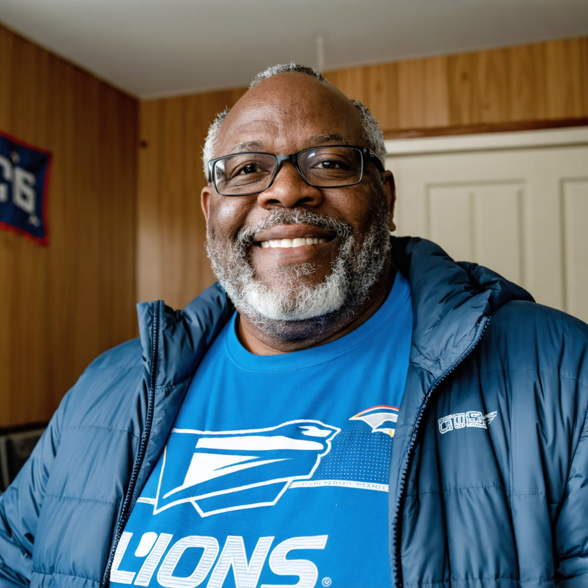
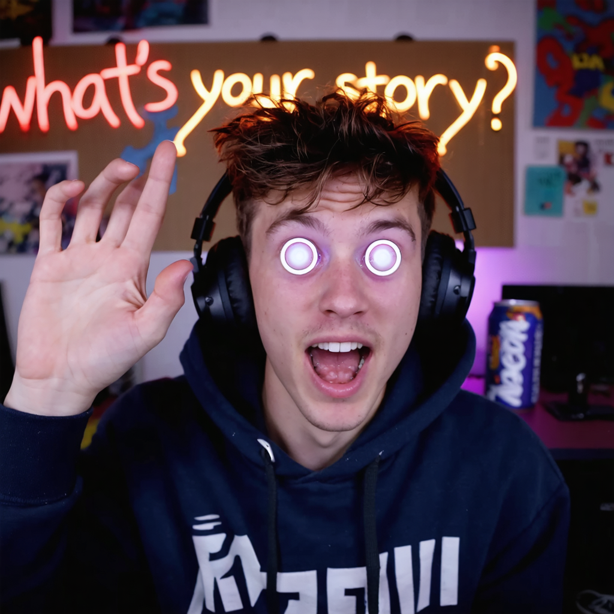

Target
Andrei — a young soldier from a sprawling war epic — has realized he is fictional and is attempting to cross into a pastoral romance two shelves over to escape his death in Chapter 41. The breach will collapse both texts.
Objective
Weaponize the breach point. A character crossing between texts creates a momentary structural vulnerability — a seam in the Literary Web's fabric. Kade intends to exploit this seam to extract rare textual material from both the war epic and the pastoral romance simultaneously. She doesn't care about Andrei. She doesn't care about either text. She cares about the material — first editions, unwritten passages, narrative ore that the Auctioneers will pay six figures for.
Opposition
Dr. Donald Ginsfeld — rival bookhunter. Slower, underfunded, burdened by ethics. He'll try to stabilize the situation, talk Andrei back into his narrative, prevent structural collapse. His team composition is unknown. Kade's intelligence (via the Lamplighters) indicates he recruited within the last 48 hours through his Wednesday night support group. Three recruits, probably literary characters with emotional baggage and a therapist's assessment of their usefulness. Kade considers this method quaint and inefficient.
Kade Knows
Everything about the opposition. She knows Ginsfeld's patterns, his methods, his weakness for moral complexity. She knows he recruits through intimacy, which means his team will be personally invested — an advantage in loyalty, a liability in objectivity. She has Lamplighter surveillance on the Metro Library basement, though she doesn't yet know which specific characters he selected.
Kade Doesn't Know
The precise mechanics of the breach. Ginsfeld has structural data — timeline, damage assessment, the architecture of both texts — that Kade doesn't have. She knows the breach is happening and approximately where. She doesn't know the rate of collapse or the exact extraction window. Ginsfeld is counting on this — it's his only real advantage. But the math cuts both ways. A depublisher who doesn't know the structural limits has no incentive to be careful. She'll come prepared for anything, bring more force than necessary, and treat both texts as acceptable losses. Ignorance doesn't slow Kade down. It just means she packs heavier.
Information Asymmetry
Ginsfeld has the map but doesn't know who's coming for him. Kade doesn't have the map but has no reason to be subtle about it. She'll blow through the architecture and sort the wreckage later. This is the mission's hidden geometry: precision versus force, and force doesn't need to know what it's hitting.
Callers

Marcus "Big Poppa" WilliamsYou are about to play a session of The Guttenberg Engine from the opposition’s perspective. This is What’s Your Story? — Lisle Kade’s recruitment operation, running reactive to Dr. Ginsfeld’s Wednesday night support group.
Kade runs a YouTube show called What’s Your Story? as a recruitment filter. It’s cheap, it’s scalable, and if the recruits don’t come back, there are always more where they came from.
The show runs every Tuesday. All day. It never stops. People call in, tell their story, get judged, get voted off or survive. New callers replace the fallen. It’s a perpetual machine of human spectacle, and somewhere offscreen, Lisle Kade watches with the patience of a spider who built her web across the only door in the room.
How to read this interface:
- Left panel — Mission dossier. Kade’s intel, parameters, and a quick reference for the show’s callers.
- Right panel — Kade’s operator card. Stats, traits, objectives, assessment criteria.
- Bottom bar — Character portraits. Click for full sheets. Hover for quick stats.
- Character names in the text are interactive — hover for mini-cards.
- Arrow keys or the nav buttons to move between beats.

The face of What’s Your Story? YouTube personality. Headset energy. Ring light reflecting in his eyes, headphones slightly too large for his head. A backdrop that says “WHAT’S YOUR STORY?” in hand-painted letters that someone clearly made at 3am.
Danny thinks he’s running a talk show. He doesn’t know Kade is running him. The questions he asks aren’t his — they’re diagnostic instruments fed through his earpiece. He’s good at his job because he doesn’t know what his job actually is.
He opens every Tuesday with the energy of a man who has consumed too much caffeine and not enough doubt. He interviews callers, referees the chat, announces the votes, and genuinely believes the show is about human connection. He’s not wrong. He’s just not in on the version of “connection” that Kade is running.
The show opens at 10am EST. Danny is mid-energy-drink, headphones on, backdrop slightly crooked. “WELCOME BACK TO WHAT’S YOUR STORY, people — it’s Tuesday, it’s raining in my heart, and we’ve got FIVE fresh faces in the grid. Let’s meet our contestants — sorry, GUESTS, we don’t say contestants, legal says it implies a prize and there is no prize, there is only GLORY —”
First round: Cheryl (grocery store story about expired yogurt), Derek from Tulsa (fence update, week 91), Priya (astral projection cat, take two), @GameOverGaming_ (Elden Ring lore about a character named Radahn that he insists is “basically a veteran with PTSD”), and Tomás from Lisbon calling at 3pm his time.
Tomás wins the round on a story about a customer who came into his bar every night for a year, ordered the same drink, said nothing, and on the last night left a note that said only “thank you for not asking.” The chat melts. Priya’s astral cat is runner-up. Cheryl exits. She’ll be back next week. She’s always back next week.
623
Second round. Derek has survived on meme energy. Karen (NTK) enters the grid for the first time. “I know my name is Karen but I’m not THAT kind of —” The chat types it along with her. Marcus “Big Poppa” Williams takes his seat in the grid like a man who owns the bar. He doesn’t tell a story. He tells a joke about a postal worker, a priest, and a mailbox that somehow ends with everyone in the call laughing and no one able to explain why it was funny. Linda Chen arrives. Teeth story. Italian teeth story. European dental infrastructure compared to American. The chat types “TOOTH LINDA TOOTH LINDA” for thirty seconds straight.
Derek gets voted off. He accepts it with the dignity of a man who will return. Karen survives on novelty. Marcus survives because Marcus always survives.
811
Danny sign-off for the round: “Derek, my brother, my soldier, my three-inches-of-fence warrior — the internet has spoken and the internet is WRONG but the internet is also GOD so goodbye.”
Third round. Marcus’s chair. He’s been here eleven rounds. He tells a story about delivering mail to a house where a woman left cookies on the porch every Christmas for twenty-two years, and the one year the cookies weren’t there, he knocked, and she was fine — she’d just switched to brownies. “I ate four brownies standing on that woman’s porch in December and it was the best day of my career.”
Anonymous enters the grid. Camera shows hands and documents. Voice: clipped, precise, no warmth. Story: “Three months ago I found a discrepancy in the metadata of internal communications at a company I will not name. The discrepancy suggests a monitoring system that does not appear in any compliance documentation. I am here because I was told this show has reach.”
The chat splits. Half think she’s a fed. Half think she’s content.
Danny: “Well, THAT was— that was something. Okay. Reactions?”
Karen: “I don’t think this is really the venue for—”
Anonymous: “I didn’t ask what you thought the venue was for.”
Anonymous survives the vote. She’ll survive two more before Kade dismisses her.
1,247 (Anonymous spike)
Rounds four and five compress. @GameOverGaming_ returns, gets eliminated telling a story about the Elden Ring DLC that starts strong but loses the room at the six-minute mark when he pulls out a whiteboard. Linda Chen tells another teeth story — this time about a root canal she performed on a nervous patient who turned out to be a retired opera singer, and when the anesthesia hit, he started singing. The story is actually good. The chat is stunned. Linda survives.
Marcus is still here. Anonymous is still here. Tomás is still here.
New callers cycle through: a man from Boise who collects antique typewriters (2 rounds), a woman from Seoul who describes her grandmother’s cooking with such precision that the chat starts crying (3 rounds, eliminated only because she refused to come back the following week), a teenager who is clearly doing this on a dare and hangs up mid-vote.
The show finds its rhythm. Danny loosens. His banter improves. He does a bit where he ranks everyone’s Zoom backgrounds. Marcus wins (a real room, a real bookshelf, a real life). Anonymous loses (wall, documents, dread).
settling around 900 — normal Tuesday
Old Jim connects. The video quality drops thirty years. His face is a topographic map of a life lived outdoors — deep lines, sun damage, eyes that might be blue or might be the color blue was before someone named it. His audio crackles. He’s wearing something that might be a flannel shirt or might be a blanket.
Danny: “Jim! My man! Welcome back for week three — give the people what they want, big guy.”
Old Jim: “I was going to tell you about the bridge.”
Danny: “Which bridge, Jim?”
Old Jim: “The one that collapsed when the horses came through. Not the military horses — the other ones. The ones that came down from the mountain when the snow broke. You could hear them before you could see them and by the time you could see them the bridge was already going.”
The room goes quiet. Marcus leans forward. Anonymous’s hands stop moving over her documents.
Jim continues: “There was a woman at the other end. She kept the lanterns lit. The ships had stopped looking for the harbor three days before but she kept the lanterns lit because — well. Because that’s what she did. That was her. That was the whole of her.”
His connection drops. Reconnects. He’s looking at something off-camera. “Sorry. Where was I.”
Danny, softly: “The woman with the lanterns.”
“Right. She—” Connection drops again. When it comes back, Jim is talking about something else entirely — a card game he played in a train station in 1974, or 1874, or a year that doesn’t have a number.
Kade watches. His details flag her filter. The bridge, the horses, the lanterns — these have the cadence of literature, the structural compression of narrative. But the drift, the repetition, the way he loses the thread and catches a different one — that’s human. Fiction doesn’t lose its thread. Fiction IS thread.
She watches for two more rounds. She dismisses him. The note she writes is one word: Human.
She’s probably right.
1,104 (Old Jim always bumps the numbers — nobody knows why)
Round six opens. Marcus, Anonymous, Tomás, Linda, and one empty seat waiting for a new caller.
The seat fills.
The camera activates and the chat goes briefly, completely silent.

A face appears in the fifth square of the grid. The first thing the audience sees is the gold band around his head — catching the light from an angle that shouldn’t exist on a Zoom call. The second thing is his eyes: amber, bright, with a quality of focus that makes the rest of the grid look like they’re running at a lower resolution. His skin has an unusual smoothness — the chat immediately begins debating his skincare. His grin is wide and uncontainable, the grin of someone who has never been in a room he couldn’t own.
Danny: “Welcome to What’s Your Story! What’s your name, friend?”
“Sun Wukong. The Handsome Monkey King. The Great Sage Equal to Heaven. Victorious Fighting Buddha. Also some people call me Monkey but I don’t love that.”
Danny blinks. “That’s— that’s a lot of names.”
“I’ve had a lot of titles. Most of them I gave myself. The one I didn’t give myself is the one they remember.” He taps the circlet. The grin tightens for a fraction of a second. “Anyway. You want my story? Oh, I’ve got a story.”
Story Time (one minute):
Wukong doesn’t sit back. He leans into the camera like he’s telling you personally.
“Born from a stone on the Mountain of Flowers and Fruit. Not born LIKE a stone — born FROM one. The stone cracked open and I was inside. First thing I did was learn to be king. Second thing I did was learn to be immortal. Got my name off the register of death — literally, I went to hell, found the book with my name in it, and crossed it out. Third thing I did was pick a fight with heaven. All of heaven. Every god, every army, every bureaucrat with a jade seal. I won most of those fights. Then the Buddha showed up and I didn’t win that one.” He taps the circlet again. “I spent five hundred years under a mountain learning a lesson I still don’t agree with. Then I walked west for fourteen years protecting a monk who couldn’t protect himself. I’ve killed demons, tricked dragons, and been to the bottom of the ocean to steal a weapon that was holding up the sea floor. My staff weighs seventeen thousand pounds and it fits behind my ear. What’s YOUR story?”
The minute runs long. Danny doesn’t cut him off. Nobody cuts him off.
It spreads through the grid. Marcus sits up straighter — the retired postal worker feels, for no reason he can articulate, that his authority as the show’s longest-surviving guest has been acknowledged and assessed. Anonymous pauses over her documents. Tomás, in his bar in Lisbon, feels the back of his neck prickle. Even through a screen, Wukong makes hierarchies visible. Not threatened. Visible.
Reactions:
Marcus (first, because Marcus always goes first): “Brother. I have delivered mail in Detroit for thirty-one years and I thought I had stories. You just made my whole career sound like a napkin note.”
Wukong: “You delivered MAIL? For thirty-one years? Voluntarily?” The grin widens. “That’s more patience than I showed in five hundred years under a mountain. Respect, old man.”
Marcus glows.
Linda: “Did you say you went to hell? Was there— did they have dentists there?”
Wukong: “In hell? No. The demons had terrible teeth. Excellent point.”
Linda glows, somehow.
Tomás: “The staff that weighs seventeen thousand pounds — you carry it behind your ear?”
Wukong: “It changes size. Right now it’s—” He reaches behind his right ear and pulls out what looks like a toothpick, holds it up to the camera. “—this big.” The toothpick glimmers, just slightly, in a way webcams shouldn’t be able to capture.
Anonymous: “How long ago was this?”
Wukong: “Which part?”
Anonymous: “The mountain. The five hundred years.”
Wukong’s grin dims one degree. The circlet glints. “Long enough that I stopped counting. Not long enough that I stopped feeling it.”
Danny reacts. He starts with the DJ energy: “Well, Sun— Wukong— Mr. Monkey King— can I call you—”
Something happens in his earpiece. His eyes flick to a spot off-camera. The smile doesn’t disappear but it hardens into something that isn’t a smile anymore. When he speaks again, his voice has changed register — still Danny, but not Danny’s question.
“Tell me something. When they put you under the mountain — did you know you’d get out?”
The room feels it. Marcus shifts. Linda’s smile fades. Tomás sets down his drink. The question doesn’t belong to Danny’s register. It’s too precise, too targeted. It’s a question designed to test something specific.
Wukong looks directly at the camera. For the first time, the grin is entirely gone. “No. I didn’t know. I thought that was it. I thought the stone I came from had taken me back.”
Pause.
“I was wrong. Obviously. But for five hundred years I wasn’t wrong. For five hundred years, that mountain was the rest of my life.”
Danny — back to himself, slightly too fast: “WOW okay that’s — that’s REAL right there, that is AUTHENTIC, thank you for sharing, let’s go to the vote—”
The vote: Cheryl (who re-entered this round) is eliminated. Sun Wukong wins by a landslide. The internet wants the Monkey King.
2,847 — climbing
Strong. Fast. Difficult. The circlet means he’s been leashed before — there’s a compliance mechanism if I can find the right pressure. The mountain answer tells me he can endure. The grin tells me he can’t endure quietly. Possible muscle. Not first choice. Watch.
| Pair | Character | Affinity | Aversion | Note |
|---|---|---|---|---|
| SW → Marcus | Wukong | 1 | 0 | The old man with the mail. Thirty-one years of the same route. That’s a different kind of mountain. |
| Marcus → SW | Marcus | 2 | 0 | This man just made me feel like delivering mail was heroic. I’m going to vote for him every round until I die. |
| SW → Tomás | Wukong | 1 | 0 | He asked about the staff. He listened to the answer. Attentive. |
Three rounds compress. Wukong dominates. His Verbosity is High and the format rewards it — a different story every round, each bigger than the last. The Dragon King. The peaches of immortality. The entire celestial army. Fan accounts appear. The viewer count doesn’t drop below 3,000.
Marcus hangs in through charisma. Anonymous hangs in through mystery. Danny loosens — he likes Wukong, and for a few rounds the show achieves the rare state of two people who are genuinely entertaining each other. Then Kade puts something in Danny’s ear, and the moment passes.
Linda and Tomás exit. Marcus holds. Viewer count: 3,400 and climbing. The Monkey King brought an audience.
Round opens. The grid: Sun Wukong, Marcus, Anonymous, @GameOverGaming_ (back for another round), one empty seat.
The seat fills. The viewer count ticks up before she speaks. The camera activates and the chat goes quiet for the second time this show, but for a different reason.

A woman’s face fills the fifth square. The effect is immediate and disorienting — the kind of beauty that makes a Zoom grid feel like it was arranged wrong, like her square should be larger, like the resolution of reality briefly increased to accommodate her.
Her background is dark — not the curated dark of a content creator, but the dark of a room where the lights are off because she didn’t bother turning them on. She’s wearing something black. Her hair is loose. She looks at the camera the way you look at something you’re deciding whether to keep.
Danny: “Wel— welcome to What’s Your Story! Wow. Hi. I’m Danny. What’s your name?”
“Nastasya Filippovna.”
Danny: “That’s— beautiful. Where are you calling from?”
“Nowhere that matters.”
Pause. Danny’s training kicks in: “Okay! Well, Nastasya, whenever you’re ready — what’s your story?”
Story Time (one minute):
She doesn’t lean into the camera. She doesn’t perform. She speaks the way you state facts in a courtroom — flat, clear, final.
“When I was a child, a man who was supposed to protect me decided I was something to own. He dressed me in silk and showed me to his friends. I was sixteen when I understood what had been done. I was twenty when I stopped expecting anyone to undo it. I learned that if you are beautiful, men will offer you things — money, status, marriage, redemption — and every offer is a cage shaped like a gift. One night, a man offered me one hundred thousand roubles as if I could be purchased. I put the money in the fire. I watched him crawl to save it. That’s when I learned that destruction is the only language people respect when you speak it. A prince offered to save me once. He was the only one who looked at me and saw a person. I ran from him. I’ll always run from him. Not because I didn’t love him but because I did and I am not a person who gets to keep the things she loves.”
Silence.
The chat:
It hits the grid. Marcus feels it — a sudden, specific memory of a letter he delivered twenty years ago that he knew was bad news, and he delivered it anyway because that was the job, and the woman’s face when she opened it. Wukong feels it — not guilt exactly, but the awareness that his five hundred years under the mountain were EARNED, that he challenged heaven not for justice but for ego, and that the Buddha was right to put him there even if he’ll never admit it. @GameOverGaming_ shifts uncomfortably. Anonymous’s hands stop moving.
Nastasya feels it — the awareness that the hierarchy in this room is visible, that the charismatic monkey in the corner square is the dominant presence, and that this dominance could be contested. Her jaw sets. She doesn’t contest it. She notes it.
Reactions:
Marcus, quietly: “I delivered mail for thirty-one years and I never once in my life had to be that brave. Ma’am. I mean that.”
Nastasya: “Don’t call me brave. Brave implies I had a choice.”
Marcus nods. He doesn’t push. He knows when words aren’t welcome. Thirty-one years of reading porches.
Wukong: “The prince who offered to save you — what happened to him?”
Nastasya turns her gaze to Wukong’s square. The amber eyes and the dark eyes meet across the digital grid. “He loved me. I destroyed him for it. Not because I wanted to. Because every good thing I touch becomes evidence that I don’t deserve good things.”
Wukong: “I spent five hundred years under a mountain because I couldn’t stop fighting authority. You spent a lifetime running from the one person who didn’t use authority against you. We’re the same problem from different directions.”
Anonymous: “The money you burned. Was it yours?”
Nastasya: “It was offered to me. Whether it was mine depends on whether you think a person can own something that was given as an insult.”
Anonymous nods. For the first time, she looks directly at her camera. “I understand that math.”
Danny reacts: “Nastasya, that was— I don’t— that was—”
Something in his earpiece. His eyes go to the spot. The smile tightens. When he speaks, it’s the other voice again.
“The fire. When you watched the money burn — did it feel like power or like grief?”
Nastasya goes very still. The question is a scalpel. It identifies the precise ambiguity at the center of her defining act and asks her to resolve it. On camera. In front of strangers.
“Both,” she says. “At the same time. That’s what makes it unforgivable.”
Danny — back to himself, jarred: “O-kay, that was INTENSE, let’s, uh, let’s get to the vote—”
The vote: @GameOverGaming_ is eliminated. He takes it well. “This is JUST like Elden Ring,” he says, and disconnects.
5,211 — the show has changed register — the audience knows it
Damaged. Perceptive. Self-destructing on a schedule she doesn’t control. The fire story isn’t theater — she actually did it. That makes her useful in one specific way: she’ll walk into danger because she doesn’t value herself enough to avoid it. The question is whether she’ll complete the objective or set fire to it. Possible infiltrator. Not reliable. Watch.
| Pair | Character | Affinity | Aversion | Note |
|---|---|---|---|---|
| NF → SW | Nastasya | 1 | 0 | The monkey. He asked about the prince, not the money. He identified the real story. He’s smarter than his grin suggests. |
| SW → NF | Wukong | 1 | 1 | Beautiful. Honest. Broken in a way that makes me angry. Not at her — at whoever broke her. I want to hit something on her behalf and she didn’t ask me to and wouldn’t want me to. |
| NF → Marcus | Nastasya | 1 | 0 | The mailman called me brave and meant it. I wanted to correct him. I also wanted to let him be right. |
| Marcus → NF | Marcus | 2 | 0 | That woman just stood on a stage made of pixels and bled in front of strangers and never once asked for sympathy. I would deliver her mail personally every day for the rest of my life. |
| NF → Anon | Nastasya | 0 | 0 | She understood the math. That’s all. |
Three rounds compress. The show has two poles now — Wukong and Nastasya — and every conversation restructures around them. He fills rooms; she empties them. The audience splits:
Marcus mediates — the retired postal worker between two forces of nature, telling dad jokes until the tension drops below lethal. The chat protects Marcus the way people protect the last good thing in a room full of sharp objects.
Muggles cycle through and don’t last. Karen (NTK) survives one round on a kindergartener who asked her “why do adults pretend to be happy,” then exits. Priya returns, lasts half a round.
Anonymous survives three more rounds. Kade has been watching her since Beat 3 — the precision of speech, the specificity of grievance, the performative anonymity. But Anonymous’s paranoia has staples and coffee stains. Her documents are in the wrong order. A fictional character’s paranoia has structure. This is just a woman with a printer and a problem.
Kade writes: Human. Confirmed. Dismiss.
Viewer count oscillates between 4,800 and 6,300.
• 2:14:07 — “When they put you under the mountain, did you know you’d get out?” (to the headband guy)
• 4:47:22 — “The fire. When you watched the money burn — did it feel like power or like grief?” (to the woman with the eyes)
Both times: eyes go upper-left. Smile changes. Voice drops half an octave. The questions are DIAGNOSTIC. They’re not conversation starters. They’re TESTS.
Round opens. Grid: Wukong, Nastasya, Marcus, Karen (NTK, surviving on borrowed time), and the empty fifth seat.
Danny: “We’ve got room for one more, folks. Who’s calling in? Remember — WHAT’S YOUR STORY?”
The seat doesn’t fill immediately. The grid shows four faces and a black square. Danny fills the silence with patter. Karen tries to start her catchphrase. Marcus tells a joke about a mailman and a parrot.
The black square remains black for eleven seconds. This is a long time on live television. The chat starts typing:
Then the camera activates. And what appears in the fifth square is the scariest thing the internet has seen on a Tuesday afternoon.

A face. Thin. Pale. The pallor of a candle at the end of its wick. Eyes that are open but appear to be looking at nothing, or at everything, with the same mild disinterest. Behind him: a wall. Cream-colored. Featureless. Close. No decoration, no window, no life. Just wall.
Danny: “Hey there! Welcome to What’s Your Story! I’m Danny — what’s your name?”
A pause. The man in the fifth square blinks. Once. Slowly.
“Bartleby.”
“Great name! Just Bartleby? Like Cher?”
“Just Bartleby.”
“Awesome! Okay, Bartleby, whenever you’re ready — what’s your story?”
Pause. Longer than the first. The grid watches. Wukong leans forward, amber eyes curious. Nastasya tilts her head, recognition forming behind her dark eyes — she sees something in the stillness that reminds her of herself, inverted. Marcus watches the way you watch a bird that’s landed on your fence — holding still because movement might break the moment.
“I would prefer not to.”
The chat detonates.
Danny, thrown: “You— you’d prefer not to tell your story?”
“I would prefer not to.”
“That’s— okay, that’s— I mean, that’s the WHOLE SHOW, buddy, the show is literally called What’s Your Story and you—”
“I understand the format. I would prefer not to.”
It hits the grid like a wave. Marcus feels the weight of thirty-one years of mail routes — every morning, every door, every bag — settle onto his shoulders. Not as memory but as mass. Nastasya feels the accumulated weight of every performance, every destruction, every time she burned something to prove she existed. Wukong feels the weight of the westward journey — every step, every demon, every meal his master didn’t cook right — and for the first time in his existence, a small voice in the back of his monkey skull says: why did I keep walking?
Karen (NTK) feels it worst. She has been explaining what kind of Karen she isn’t for so long that the accumulated weight of self-definition pins her to her chair. She looks slightly ill.
The contagion spreads to the chat:
Reactions:
Wukong, leaning so far into his camera his nose nearly touches the lens: “Brother. I have met the Buddha. I have fought the Jade Emperor. I have looked into the face of oblivion. You are the first person to scare me on a ZOOM CALL.”
Bartleby looks at Wukong. His expression doesn’t change. “I don’t intend to scare anyone.”
Wukong: “That’s what makes it scary!”
Nastasya, quietly: “He doesn’t owe you a story. None of us owe anyone a story.”
The room goes still. It’s the first time Nastasya has defended anyone. She seems surprised by it herself.
Marcus: “Young man. You don’t have to tell your story. But can I ask — are you okay?”
Bartleby considers this. “I am not in distress. I am not in comfort. I am.”
Marcus nods. He has seen people like this. Not often. Not on a Zoom show. But at doors, on routes. The people who stop answering. The mail that stacks up. He knows what this posture means and it makes his chest tight.
Danny reacts — pure Danny, not Kade’s Danny: “Bartleby, buddy, you don’t have to share, but can I just say — you’re on the show, you’ve got the slot, the people WANT to hear from you even if what they hear is nothing, and honestly? Honestly? The nothing is kind of incredible. I don’t know what you’re doing but it’s doing something to this room.”
Something in Danny’s earpiece. His eyes go to the spot. But this time, he doesn’t ask the planted question immediately. He hesitates. His jaw works. He looks at Bartleby — at the wall, at the thinness, at the folded hands — and for a moment, Danny looks like he would prefer not to ask what he’s about to ask.
“Bartleby. Before this — before the wall and the preference — was there something you were looking for?”
The question is precision-targeted. The Dead Letter Office is Bartleby’s secret wound — the thing that preceded the refusal, the event horizon beyond which preference became the only language he had left.
Bartleby looks at the camera. For the first time, something moves behind his eyes — not emotion exactly, but the ghost of emotion, the letter of emotion that was addressed but never delivered.
“I sorted letters once. Letters that didn’t arrive. I preferred to stop after that.”
Danny, barely audible: “What was in the letters?”
“Everything. Everything that people send when they think someone is listening.”
Silence. The chat has stopped scrolling.
In the silence, Bartleby sees it — not consciously, but the way a clerk sees a misfiled document. The show is a Dead Letter Office. Every caller is sending a letter — a story, a plea, a performance — to an audience that can’t receive it the way it was meant. The votes are returns to sender. The eliminations are undeliverable notices. Danny is the postal worker who carries the bag and tries to smile.
He doesn’t say any of this. He blinks. He looks at his wall.
The vote: Karen (NTK) is eliminated. She doesn’t do her catchphrase on the way out. She just disconnects. The Permission to Stop hit her harder than anyone.
The internet wanted to eliminate Bartleby (the fear response) but Kade overrides. He stays.
8,744
Minimal utility. Maximal strangeness. The refusal is absolute and I don’t understand its source. He would walk into a collapsing text and prefer not to walk out. Is that useful? It’s the cheapest body in the room. He won’t panic. He won’t fight for his own life but he won’t run from its absence either. And the filter — the Permission to Stop — is the closest thing to a chemical weapon I’ve ever seen on a Zoom call. If I can aim him at Ginsfeld’s team, the filter alone might be worth the slot. Keep. Provisional.
| Pair | Character | Affinity | Aversion | Note |
|---|---|---|---|---|
| B → NF | Bartleby | 1 | 0 | She said I didn’t owe anyone a story. She’s right. She’s the first person who’s been right in a long time. |
| NF → B | Nastasya | 1 | 0 | He is the negative image of me. I burn things to be seen. He disappears to be left alone. We are the same wound turned in different directions. |
| B → SW | Bartleby | 0 | 0 | Loud. Bright. He is everything I am not and I have no opinion about it. |
| SW → B | Wukong | 0 | 1 | I don’t understand him. I’ve fought gods and demons and monsters. None of them scared me the way this man’s nothing scares me. The wall. The wall. |
| B → Marcus | Bartleby | 1 | 0 | He asked if I was okay. Not for the show. For me. He sorts letters too, in his way. |
| Marcus → B | Marcus | 1 | 1 | That boy needs someone. That boy needs a porch and some brownies and someone who’ll check on him. But he’d prefer not to be checked on. That’s the tragedy of it. |
Four rounds compress. Three literary characters in the grid simultaneously. Wukong fills the silence. Bartleby creates it. Nastasya operates in the space between, speaking only when what she says will cut. Spectacle, silence, and the knife edge in between.
Marcus holds — the muggle who survives through a warmth so genuine it becomes its own category. Derek returns (fence update, week 92, eliminated in one round). Priya’s final appearance: “My cat says goodbye.”
Wukong tells a story about being tricked by a demon who could copy his appearance — Seventy-Two Transformations used against him. His face flickers on camera. This time Nastasya sees it. She doesn’t comment. She files it.
Nastasya addresses Bartleby directly for the first time: “You prefer not to. I prefer to destroy. We’re both saying no. I just say it louder.”
Bartleby: “The volume doesn’t change the word.”
The three filters interact in close proximity. Two consecutive muggle rounds end with callers voluntarily disconnecting before the vote. They don’t explain why. They just leave.
Viewer count: stabilized between 7,000 and 9,500. The show has a gravity now.
The dynamic shifts. Marcus — who has survived on warmth and dad jokes for eleven weeks — tells a real story for the first time.
“I got a story. Not a funny one this time. Y’all want to hear a real one?”
The grid nods. The chat types YES.
“Thirty-one years carrying mail. The last year, I had this route in Corktown — old neighborhood, beautiful, falling apart the way beautiful things do. There was a house on Leverette Street. White lady, lived alone, name was Helen. I delivered her mail every day for eleven months. Never spoke to me. Not rude — just... gone. Like she was somewhere else even when she was standing at the door.”
He pauses. The show is silent.
“One day I notice her mail’s stacking up. Three days, four days. I knock. Nothing. I come back the next day, knock again. Nothing. Day after that, I use the phone number we’re not supposed to use and I call. She picks up. She says: ‘I’m here. I just stopped going to the door.’ And I say: ‘Ma’am, you got mail.’ And she says: ‘Is any of it for me?’ And I didn’t know what to say to that because all of it was addressed to her. But she was asking something else.”
Marcus looks at Bartleby. “She was asking if anyone was writing TO her. Not at her. Not for her. TO her. And the answer was no. Everything in that stack was bills and circulars and a coupon for a oil change. Nothing was TO her.”
Bartleby’s eyes close. One second. Two. When they open, he looks at Marcus and says the most words he has said on the show:
“The Dead Letter Office was full of letters that were TO someone. Love letters. Pardons. Apologies. Money sent too late. All of them TO. None of them arrived. The cruelty isn’t the absence of letters. It’s the existence of letters that never reach.”
Marcus’s eyes are wet. “Yeah. That’s it. That’s exactly it.”
The chat has stopped being the chat. It is 9,000 people sitting in silence.
Marcus feels the weight. Thirty-one years. Every door. Every bag. Every Helen whose mail was addressed but not TO. And for the first time, Marcus — Big Poppa, the show’s heart, the man who has never once looked anything but solid — looks tired.
Nastasya, very softly: “Did you go back? To Helen?”
Marcus: “Every day. Every day until I retired. I’d knock. Sometimes she’d open the door. Sometimes she wouldn’t. But she knew someone was knocking.”
Marcus told that story while looking at Bartleby, but it landed on Nastasya. The story about showing up, every day, for someone who stopped going to the door — it’s the story of the prince she ran from. She flinches. Her hand goes to her throat. But the DC wasn’t met; the flinch passes.
| Pair | Character | Affinity | Aversion | Note |
|---|---|---|---|---|
| B → Marcus | Bartleby | +1 (→2) | 0 | He understood. Not the letters. The space between the letters. That space is where I live. |
| Marcus → B | Marcus | +1 (→2) | 1 | He put words on the thing I’ve carried for a year. Helen’s question. “Is any of it for me?” Bartleby knows what’s in the letters that don’t arrive. God help him, he knows. |
| NF → Marcus | Nastasya | +1 (→2) | 0 | He knocked. Every day. For a woman who wouldn’t open the door. That is either the bravest or the saddest story I’ve ever heard and I’ve heard a thousand. |
| SW → Marcus | Wukong | +1 (→2) | 0 | The old man. I thought he was soft. He’s not soft. He’s the hardest material — the kind that bends without breaking. Five hundred years under a mountain and I never learned how to do what he does: show up. |
The vote after Marcus’s story is unanimous. Marcus wins. He has won every round he’s been in. But this round is different — Danny announces that Marcus, as the longest-surviving guest in show history, has earned the right to “graduate.”
Danny: “Marcus ‘Big Poppa’ Williams. Eleven weeks. Zero enemies. One million friends. You are the first person to ever leave this show standing. The internet has spoken and the internet says: WE LOVE YOU, GO HOME, TAKE A NAP.”
Marcus laughs. He looks at the grid — at Wukong, who grins and salutes. At Nastasya, who nods once, with something that might be respect. At Bartleby, who looks at his wall.
Marcus: “One thing before I go. The three of you—” He’s talking to the literary characters. He doesn’t know that’s what they are. He just knows. “—your stories are different. Not different like interesting-different. Different like they’re FROM somewhere. I don’t know where. I don’t need to know. But wherever you’re going after this... knock on doors. Even when nobody answers. Especially then.”
He disconnects. The chat weeps. The viewer count drops by 800 as the Marcus protection society logs off in mourning.
Kade doesn’t react. Marcus was never on her radar. She lets him go the way you let ambient noise go when you close a window.
Three rounds without Marcus. The triangle operates without a mediator and the show gets harder.
Wukong escalates. His stories get bigger, faster, more desperate. He tells the mountain story again—five hundred years, alone—and for the first time, the grin doesn’t come back at the end. The show itself is starting to feel like a mountain made of pixels. He’s filling silence the way you fill a hole—frantically, because the alternative is looking into it.
Nastasya sees the escalation for what it is: claustrophobia transmuted into performance. She doesn’t say anything. She watches.
Viewer count: 9,800. Approaching five figures.
Round opens. Grid: Wukong, Nastasya, Bartleby, a muggle (man from Boise, back for his second round with the typewriter stories), and a new caller—a woman from Prague who studies ancient manuscripts for a living and whose story about finding a coded message in a 15th-century psalter is genuinely fascinating.
The Prague woman’s story triggers something. Nastasya leans forward. Wukong goes still. Even Bartleby tilts his head one degree. The coded message, the hidden text, the thing-inside-the-thing—it resonates with the reality they all carry: they ARE texts. They are the coded message.
Danny, in his earpiece, gets the longest instruction Kade has ever given him.
His eyes go to the spot. His smile dies. He doesn’t even try to keep it alive this time. When he speaks, the Danny-voice is so far gone that the chat catches it in real time:
Danny: “I want to try something different. One question, for three of you. Not a story—a confession. Something you’ve never told anyone. The kind of thing you’d put in a letter you never sent. Wukong. Nastasya. Bartleby. One sentence each. What are you carrying?”
Silence. The question is a detonation device. Three literary characters, asked to confess in public, in a format that compresses intimacy, by a voice that isn’t the host’s.
Wukong goes first. His grin is nowhere. The circlet gleams.
“I’m carrying the knowledge that the mountain was right. That I earned every year under it. And that if they put me back, I’d fight my way out again anyway, because being right about my punishment doesn’t make me able to accept it.”
Nastasya goes second. She doesn’t look at the camera. She looks down. At her hands.
“I am carrying the knowledge that the prince who offered to save me was telling the truth. He saw a person. I was a person. And I ran because staying would have required me to be one—to live as something other than a wound—and I don’t know how.”
The DC 20 hits the room like a shockwave. The social fiction of the show—that these are guests, that this is entertainment, that the votes are a game—collapses. The Prague woman puts her hand over her mouth. The Boise man looks like he’s been punched. Danny’s eyes are glassy.
Cost of DC 20 Confession: Nastasya reveals something she didn’t intend—her voice cracks on “I don’t know how” and what comes out isn’t the controlled Nastasya, it’s the sixteen-year-old who understood what Totsky had done. For one second, the mask is gone entirely. The chat can’t handle it. Several viewers turn off their cameras. Some leave the stream. Some stay and don’t type anything.
Bartleby goes last. He looks at the camera. The wall behind him. The folded hands. The cadaverous stillness.
“I am carrying the letters.”
Three words. The chat doesn’t move for nine seconds.
- The Challenge Acknowledged: every hierarchy in the room is visible. Danny’s captivity. Kade’s invisible authority. The power structure of the show itself.
- The Mirror of Worth: every moral compromise is illuminated. The audience’s participation in a spectacle built on vulnerability. Danny’s complicity.
- The Permission to Stop: the weight of obligation presses on every person watching. 9,000 viewers sit in the specific, shared awareness that they could close the tab. Some do.
Viewer count drops from 9,800 to 7,200 in thirty seconds. Then climbs to 11,400 as word spreads. The confession round will be clipped, analyzed, and debated for weeks.
The vote: The Prague woman is eliminated. She doesn’t seem to mind. She looks dazed.
Confirmed. All three. The confessions are diagnostic confirmation—no muggle carries that kind of weight with that kind of structure. The monkey carries earned punishment. The Russian carries self-inflicted exile. The scrivener carries the entire postal system of human failure. They’re literary. All three. Trigger accumulation protocol. One more and I shut it down. But I want four. Three is the minimum. Four gives me a spare.
Two rounds compress. The mood has changed. Wukong is quieter—he tells the story of Tripitaka, the annoying, fragile, holy man he walked west with, and for the first time his voice carries devotion instead of bravado. Nastasya is withdrawn. The DC 20 Confession cost her. Bartleby is Bartleby—but the chat notices his hands have uncurled slightly. Something opened. Something small.
Viewer count: steady at 10,000+.
Round opens. Grid: Wukong, Nastasya, Bartleby, a muggle cycling through, and the empty fifth seat.
Kade has three confirmed literary characters. The engine says minimum three. But the engine also says Kade is ahead of Ginsfeld—faster, better funded. She wants four. Three for the mission. One spare. One expendable backup. She keeps the show running.
The seat fills.

A man appears in the fifth square who looks like the evening’s best idea.
Cream suit. No wrinkle. Hair that has never considered disorder. A smile that arrives at the camera like it’s been rehearsing—wide, warm, and fractionally too perfect, the way a painting of a smile is too perfect because no one actually smiles with that much geometry.
Danny: “Hey! Welcome to—did you just call me old sport?”
“It’s a habit. A bad one, I’m told.”
Danny, charmed despite himself: “I kind of love it. What’s your name?”
“Jay Gatsby.”
The literary characters react. Wukong has never heard the name—different canon, different shelf. Bartleby has—he sorted the letters, he knows every story that was sent and didn’t arrive, and Gatsby is the letter America sent to itself about the impossibility of self-invention. Bartleby’s eyes shift from the wall to the screen. One degree. It might be the largest movement he’s made since arriving.
Nastasya’s reaction is the strongest. Her Sensitivity is High and she reads Gatsby instantly—reads the construction, the polish, the hope that operates as both fuel and flaw. She sees herself in the mirror that Gatsby holds up to every room: the beautiful surface, the terrible depth, the thing underneath the performance that keeps performing because stopping would mean looking at what’s underneath.
It hits the grid, amplified by three literary characters already in the room. Wukong’s amber eyes go distant—the kingdom, not the prison. Nastasya’s jaw tightens—the prince, always the prince.
Bartleby remembers a letter. Not a category of letters. One specific letter, addressed to a woman named Helen, containing a pressed flower, sent by a man who walked past her house every morning for three years and never said hello. The letter never arrived. Gatsby’s presence pulls it out of him like a splinter working its way to the surface.
Story Time (one minute):
Gatsby smiles. The smile is armor and he knows it and he wears it anyway because the alternative is the thing underneath.
“My name is Jay Gatsby. That’s not the name I was born with—I was born with a name that didn’t fit, in a place that didn’t want me, to a future that was already decided. So I changed it. I changed all of it. I built a fortune. I built a house. I threw parties—the most beautiful parties anyone had ever seen—for hundreds of people, every weekend, and every weekend I stood at the window and watched for one face. One person. She didn’t come. She came once and then she left again and I’ve been standing at the window ever since.”
He pauses. The smile is still there but it’s thinner.
“Recently, I went to a meeting. A support group, old sport, for people like—well, for people who feel like they’re between stories. The man who ran the group talked to me for hours. I thought he saw something. I thought he was going to invite me to be part of something. He didn’t. He told me I was too hopeful. Too hopeful.” The smile cracks. “Is that possible? To be too hopeful? I’ve been thinking about it. I think what he meant is that I’m too hopeful for the thing he needed, and what he needed was someone who could look at a dark room and see a dark room, and what I see is a room where the light hasn’t been turned on yet.”
Danny, softly: “What happened? After the meeting?”
“I heard about this show. A way back, someone said. A nexus. A party where someone might let me in.” The smile comes back, full wattage, but the eyes stay cracked. “So here I am, old sport. What’s your story?”
Reactions:
Wukong: “You changed your name. I gave myself seven. The thing about names you choose is that they fit better than the ones you were given, but they never fit perfectly. There’s always a gap. The gap is where the old name lives.”
Gatsby: “That’s... that’s very perceptive, old sport.”
Wukong grins, but it’s the real one, not the armor. “I know a thing or two about reinvention. The trick is knowing when the new version is better than the old one and when it’s just louder.”
Nastasya: “The man who told you that you were too hopeful. Was he right?”
Gatsby turns to her square. The Lost Thing filter and The Mirror of Worth meet between them. Nastasya sees Gatsby’s moral compromise—the lies, the bootlegging, the self-invention built on fraud. Gatsby sees something he lost—not Daisy specifically, but the idea of being seen. And Nastasya is looking at him with eyes that see everything.
“I don’t know,” Gatsby says. “I think he was right about me and wrong about hope. You can be the wrong vessel for the right thing.”
Gatsby has been rejected, is unmoored, is sitting in a Zoom call with strangers, and has just admitted that the man who evaluated him found him wanting. But his morale holds. It always holds. That’s the beauty and the tragedy of him.
Bartleby: “You said you threw parties for someone who didn’t come.”
Gatsby: “Yes.”
“I sorted letters for people who didn’t receive them. The parties and the letters are the same.”
Gatsby stares at Bartleby. The connection lands—the man who throws parties that aren’t attended and the man who sorts letters that aren’t received. Two ends of the same failed communication. Gatsby’s eyes get bright.
“Yes,” Gatsby says. “Yes, that’s exactly it, old sport. That’s exactly it.”
Danny reacts—and this time, Kade doesn’t need to prompt him. Danny, pure Danny, the host who hides behind banter, looks at Gatsby and says: “Jay. Can I tell you something? You came on this show looking for a party that would let you in. Brother... you’re IN. You’re here. This is the party. We might not be the people you were waiting for, but we’re the people who are here.”
The chat explodes with love for Danny. For one moment, the host and the DJ and the scared man with the earpiece are the same person, and that person just said something real.
Kade says nothing in the earpiece. Danny waits for the voice. It doesn’t come. He almost looks disappointed. The absence of the voice means the voice doesn’t consider Danny’s sentiment worth correcting.
The vote. The Boise typewriter man is eliminated.
[VOTE RIGGED — Kade protects JAY GATSBY] (unnecessary — the audience voted overwhelmingly for Gatsby)
Viewer count: 12,100. Peak. The show has never been this high.
Ginsfeld’s reject. That makes him mine. He was cut because he’s a vulnerability—the resonance complication, the green light, the hope that can’t distinguish between salvation and seduction. Those are liabilities in Ginsfeld’s cautious operation. In mine, they’re features. I don’t need him to survive the mission. I need him to walk into the text, carry whatever I point him at, and keep walking until the text keeps him or the job is done. His hope is my fuel. His obedience is guaranteed by his desperation. The Beautiful Lie is the cherry on top—a man who can make anyone believe anything, including himself, inside a narrative environment where belief shapes reality. First pick. Lock him in.
Beat-Close Evaluations:
| Pair | Character | Affinity | Aversion | Note |
|---|---|---|---|---|
| G → SW | Gatsby | 1 | 0 | He knows about names. About choosing who you are. His circlet is my “old sport”—the binding we wear because the alternative is being nameless. |
| SW → G | Wukong | 1 | 0 | Beautiful liar. Beautiful true thing wearing a lie’s clothes. I like him. I shouldn’t. Liking him feels like liking a candle that’s almost out. |
| G → NF | Gatsby | 2 | 0 | She sees me. Not the suit, not the smile—the thing under it. The last person who looked at me like that was in a basement with bad coffee and he sent me away. She hasn’t sent me away yet. |
| NF → G | Nastasya | 1 | 1 | He is me. The version of me that kept hoping. The version I ran from. Looking at him feels like looking at a wound I cauterized and finding it’s still bleeding underneath. I want to protect him and I want to shake him and I know I’ll probably do neither. |
| G → B | Gatsby | 2 | 0 | The letters. The parties. He understood. In one sentence he understood what I’ve been trying to say my entire life. |
| B → G | Bartleby | 1 | 0 | He throws parties. I sort letters. We are both in the business of things that don’t arrive. I have not felt kinship in a very long time. I am not sure I like it. |
Two rounds with all four. No muggles survive more than one round. The show has become something the internet doesn’t have a category for.
Wukong tells Gatsby he’s “the most human thing I’ve ever met, and I don’t mean that as a compliment or an insult, I mean it as a fact.”
Gatsby tells a story about the last party—the one nobody came to, the one he threw anyway, the night he stood at the window until dawn. Bartleby listens. He listens the way he does everything—completely, without expression, without judgment. Gatsby has never been listened to like that. It unnerves him and he can’t stop talking.
All four filters active simultaneously. Kade, offscreen, notes that her production assistants have gotten slower. The filters are leaking through the screen. Muggles cycle through and leave in tears.
Kade has four confirmed literary characters. She triggers the shutdown protocol.
Before the shutdown, one final prompt. Kade wants to confirm her assessment—one more data point on obedience and capability.
Danny’s earpiece activates. This time, Danny doesn’t fight it. He’s tired. The show has been running for nine hours. His ring light is burning his eyes. The man behind the banter is running on fumes.
“Jay. If someone offered you a purpose—a real one, not a party, not a promise—something that needed doing, somewhere dangerous, with no guarantee you’d come back. Would you go?”
The room recognizes the weight. Wukong’s grin dies. Nastasya’s eyes narrow—she hears the voice behind Danny’s voice, the clinical precision, the assessment masked as conversation. Bartleby doesn’t react. Bartleby never reacts.
Gatsby looks at the camera. The Self-Made Man condition is in full effect—the smile, the posture, the suit—but behind it, The Cut bleeds. Ginsfeld rejected him. The basement sent him away. The Wednesday Group didn’t want him. And now someone, through Danny, through this absurd internet show, is asking if he’d go somewhere dangerous for a purpose he doesn’t know yet.
“Yes,” Gatsby says. And the word isn’t performance. It isn’t The Beautiful Lie. It’s the simplest, most dangerous thing Jay Gatsby has ever said. He would go. He would go because going is the only verb he knows, because standing still is the green light going dark, because someone asked and asking is enough.
He adds: “I’ve been waiting my whole life for someone to ask.”
Nastasya closes her eyes. She recognizes the trap. She can see the shape of it—the desperate man, the purposeful offer, the direction that leads into danger. She’s watched this story before. She was IN this story before. And she doesn’t say anything, because what would she say? Don’t go? She’s the woman who ran from being saved. She has no authority on the subject of accepting offers.
Wukong: “Brother.” Just that. One word. The Monkey King, who has more words than anyone, reduces himself to one. It’s the kindest thing he can do.
Bartleby looks at Gatsby. The Dead Letters skill thrums—Gatsby’s “yes” is a letter being sent, and Bartleby can see the address, and he knows the address doesn’t exist.
Confirmed. He’ll go. Obedience: High. Lock.
Viewer count: 11,800.
One final round. All four literary characters plus one muggle—Derek from Tulsa, returning for a final fence update that he doesn’t get to deliver because the show is about to end and even Derek can feel it.
The round is quiet. Stories are short. The energy has shifted from performance to something closer to a vigil. Wukong tells a story about reaching the end of the westward journey and standing at the gates of the Thunder Monastery and feeling nothing—not triumph, not relief, not enlightenment. Just the awareness that the walking was done and he didn’t know what to do with his legs anymore.
Nastasya doesn’t tell a story. She says: “What’s left is just me, and I don’t know if ‘just me’ is a story or an ending.”
Bartleby says nothing. But his hands, which have been loosening since Beat 21, uncurl entirely. His palms rest open on his lap. Open palms from Bartleby feels like a miracle.
Gatsby says: “There’s a green light. At the end of a dock, across the water. You can see it from where I stand. You can always see it. I’ve been moving toward it my whole life. I think... I think the show is near the light. I don’t know why I think that. But I do.”
The room believes him. The green light feels real. For one moment, the Zoom grid seems to glow slightly green, and whether it’s a webcam artifact or Gatsby’s CHA 18 leaking into reality, no one can say.
Danny: “Well, folks... it’s been a day. It’s been one HELL of a day. I’ve been hosting this show for two years and I’ve never—” He stops. His eyes go to the spot. They stay there longer than usual. When he looks back at the camera, there’s something in his expression that the audience has never seen before.
It looks like goodbye.
“—I’ve never had a day like this one. Whatever happens next... thanks for watching, old sports.”
He uses Gatsby’s phrase. The chat catches it. Danny has never used a guest’s language before. It’s the host’s equivalent of a salute.
Five rounds compress into texture. No muggles last more than half a round. The show is winding down but the audience doesn’t know it.
Beat 29: Wukong and Nastasya have their first real argument—not intellectual fencing but a genuine collision.
“You’re scared,” Nastasya says. “Not of gods or mountains. You’re scared that the pilgrimage was the point. That the Monkey King who fought heaven is gone and what’s left is a man who walked west because he was told to.”
Beat 30: Gatsby mediates.
“Old sport. Both of you. The leash and the fire—they’re the same thing, aren’t they? The thing that controls you is the thing that proves you’re alive. If the circlet didn’t tighten, would you know you still mattered? If the roubles didn’t burn, would anyone hear you?” He pauses. “I have a green light. It’s the most beautiful thing I’ve ever seen and it’s everything that’s wrong with me. But I’d rather have the light and be wrong than lose the light and be nothing.”
The argument doesn’t end but it transforms. The heat becomes warmth. The collision becomes recognition.
Beat 31: Bartleby speaks unprompted. For the first time in the entire show, he volunteers language.
He sees the show’s hidden purpose—not Danny’s show, but the show behind the show. The sorting. The filter. The person offscreen who is reading every letter and deciding which ones to keep. He can see the shape of what Kade is doing. Not her name, not her face—just the structure. A reader. Sorting.
He doesn’t say anything about it. He looks at the wall.
Beat 32: The show is running on fumes. Danny has been live for ten hours. His DJ energy is gone. What’s left is a man in headphones who looks like he hasn’t slept in days.
Beat 33: Derek from Tulsa in the fifth seat, telling a fence story nobody listens to. Viewer count: 10,400. Danny is looking at the spot off-camera with an expression that might be fear or might be relief.
Kade sends the signal.
The Zoom call glitches.
It starts small—a frame skip, a stutter in Danny’s audio. The chat thinks it’s server load. It’s happened before. Tuesday shows crash sometimes.
Then the glitch deepens. The grid pixelates. Danny’s face breaks into colored blocks. The viewer count, which has been steady at 10,400, drops to zero in one second. Not a decline—a deletion.
Danny’s face comes back for one moment—clear, sharp, higher resolution than the show has ever had, as if the camera suddenly stopped lying about what it sees. His expression is:
First: confusion. The show is glitching. This has happened before.
Second: recognition. This isn’t a glitch. This is the signal.
Third: something that looks like relief. The show is over. He can stop.
Fourth: something that looks like fear. The show is over. He knows what comes next.
The literary characters’ screens go dark.
Derek from Tulsa tries to reconnect. He can’t.
11,000 people try to refresh the stream. They can’t.
Danny’s camera shows a brief, final image: his hand reaching for the headphones, pulling them off, and his face—without the headphones, without the ring light, without the show—looking like a man waking up from a dream he’s been having for two years.
The screens of four literary characters light up simultaneously. Not with the Zoom interface. With a message. Not from Danny, not from the show’s system. A text notification from an app none of them remember installing.
The message contains an address.
Nothing else. No explanation. No name. No “if you’re interested.” Just the address.
Gatsby reads it and feels hope.
Wukong reads it and feels the circlet tighten.
Nastasya reads it and feels the fire.
Bartleby reads it and would prefer not to—but his hands, which have been open since Beat 27, reach for the phone anyway.
They arrive separately, collected by Kade’s agents—people in unremarkable clothes who appeared at the addresses on their phones, said nothing, and drove them here. The drives were different lengths but felt the same: silent, purposeful, one-directional.
Gatsby arrives first. He straightens his pocket square in the industrial lighting and stands near the folding table because standing near a table feels like standing near a party. The table has nothing on it.
Wukong arrives second. He walks in like he’s casing the room—eyes everywhere, grin absent, every surface evaluated for exits, threats, and things to hit. The fluorescent lights catch the circlet and for a moment the gold looks grey, like everything else in this room.
Nastasya arrives third. She looks at the room the way she looked at the Zoom grid—assessing, dismissing, filing. The fluorescent light does what fluorescent light does to everyone: it makes her look worse. But worse for Nastasya Filippovna is still the most arresting face in any room.
Bartleby arrives last. He walks in, sees the wall across the room—concrete, featureless, close—and walks to it. He stands facing it. His hands fold.
The four literary characters are in the same room for the first time without screens between them. All four filters interact at full, unmediated power. The agents by the door shift their weight. One of them thinks, briefly, about walking away from this job. He doesn’t.
She enters through a door they didn’t see. Not a dramatic entrance—she was simply not in the room and then she was, the way a fact becomes true.
Lisle Kade is not what they expected.
She is small. Smaller than Nastasya. Shorter than Gatsby. Smaller than anyone her reputation would suggest. She stands still in the center of the room with a stillness that makes Bartleby’s look performative. Her stillness is not philosophy. It is efficiency. She is not moving because nothing in this room requires her to move yet.
Her face is unremarkable. Not ugly, not beautiful, not interesting. A face that exists to avoid being remembered. Brown hair. No jewelry. Clothing that is neither fashionable nor unfashionable—the clothing of someone who dressed to be invisible and achieved it.
Her eyes are the only thing. Grey, flat, the color of the room. They move across the four characters the way a scanner moves across a document—left to right, top to bottom, processing.
She doesn’t introduce herself. She doesn’t ask their names. She already knows.
The room smells different with her in it. Not perfume—the absence of perfume. Something metallic. Something that might be ozone or might be the molecular residue of bridges burned so efficiently they left no ash.
Wukong feels the circlet respond. Not tightening—humming. Kade’s authority is not the Buddha’s authority (cosmic, paternal, earned). It is the authority of the logistics hub itself—procedural, impersonal, absolute. The circlet doesn’t know what to do with it.
Nastasya reads her instantly—a woman who has removed sentiment from her operational vocabulary the way a surgeon removes a tumor. Kade is not cruel. Cruelty requires feeling. What’s left is function. Nastasya recognizes this. She did it to herself once. But Nastasya’s excision was a wound. Kade’s is a tool.
Gatsby smiles at Kade. The Self-Made Man condition fires—the rehearsed charm, the geometric smile. “Good evening, old sport.”
Kade looks at him. The grey eyes process. She does not respond to the greeting. She does not acknowledge the smile. Gatsby’s smile, which has opened every door he’s ever stood in front of, hits Kade like a key hitting the wrong lock. It slides off.
Bartleby, facing his wall, does not turn around.
Kade speaks. Her voice is flat, clipped, devoid of cadence. She does not use metaphors. She states facts the way you state dimensions.
“There is a text. A war epic. Inside it, a character is attempting to cross into an adjacent text. The crossing creates a structural vulnerability—a seam. Through that seam, valuable material can be extracted. A rival operator will attempt to prevent the extraction. You are going in. You are taking what I point you at. You are coming out.”
She does not say “if you come out.” She does not say “you might not come back.” The omission is the statement.
Wukong: “What’s in the text?”
“War. A dying narrative. A soldier who thinks he can escape his death by walking into someone else’s story.” Her eyes move to Wukong. “You would understand that impulse.”
The circlet hums. Wukong doesn’t respond.
Nastasya: “Who is the rival operator?”
“A man named Ginsfeld. He recruits through therapy and chooses his teams with care. His care is his weakness. He will hesitate. You will not.”
Nastasya: “And if we do?”
Kade looks at her. The grey eyes. The flat voice. “Then you’ll be inside a collapsing text with no extraction plan and a rival team between you and the exit. The text will offer you a role in its story. Some of you will want to accept. Don’t.”
Gatsby: “What do we get out of it?”
The question Kade has been waiting for. She turns to Gatsby with the precision of someone who has rehearsed this moment not because it matters but because the response is a tool.
“What do you want?”
Gatsby hesitates. The green light is at the edge of his vision. What does Jay Gatsby want? He wants to be let in. He wants someone to tell him his hope is not a liability. He wants to matter to someone’s plan.
“I want a purpose,” he says.
“You’ll have one,” Kade says. “Maybe.”
The maybe is the cruelest word in the room. It implies possibility. It implies contingency. It is the green light at the end of a dock, and Kade just put it there, and Gatsby is already reaching for it.
Wukong: “And what if we don’t go?”
Kade: “The door is behind you.”
She doesn’t look at the door. She doesn’t threaten. She doesn’t say what happens to people who don’t go. She just states the geography. The door is there. You can use it. The absence of threat is its own threat—not because of what she’d do, but because of what she wouldn’t. She wouldn’t stop them. She wouldn’t care. She’d find others. They are replaceable. The door is the proof.
Bartleby’s filter interacts with Kade’s offer. The weight of going settles on everyone. The permission not to go is real—the door is right there. Wukong feels his legs want to walk to the door. Nastasya feels the pull of absence—the familiar urge to burn the offer and walk away. Gatsby feels... nothing. Hope Against Evidence has him anchored. He’s going. He was always going.
Bartleby, still facing the wall, speaks. “I would prefer not to.”
The room goes still. Kade’s eyes move to the wall, to the thin man standing in front of it, to the folded hands.
“I know,” Kade says. “You’ll go anyway.”
Bartleby says nothing. His hands stay folded. But he doesn’t walk to the door.
Kade is right. She’s right because she understands something about Bartleby that Bartleby might not understand about himself: the preference not to is not refusal. It’s a description of his state, not a prediction of his behavior. He prefers not to. He will go anyway. The distance between preference and action is where Bartleby lives, and Kade just measured it.
Kade has four literary characters. She needs three.
She doesn’t announce the cut. She doesn’t explain the criteria. She looks at the room—at Wukong by the wall (the wrong wall, not Bartleby’s wall, the wall nearest the door), at Nastasya standing with her arms crossed in the center, at Gatsby by the empty table, at Bartleby facing his wall.
She speaks to three of them.
“Gatsby. Wukong. Bartleby. You’re in.”
She doesn’t look at Nastasya. She doesn’t say “not you.” She just doesn’t include her name. The absence is the cut.
Nastasya understands immediately. She has been excluded before. She has been the woman not included in the sentence. Her jaw tightens. The Mirror of Worth turns inward—her own moral compromise, visible to herself: she came here hoping to be chosen, and hoping to be chosen is the thing she swore she’d never do again.
“You think I want to go?” Nastasya says. Her voice is the courtroom voice—flat, clear, final. But the flatness has a vibration under it. “You think I came here to be sorted by another person who sees people as inventory?”
Kade looks at her for the first time since the cut. The grey eyes. No emotion. No recognition of the outburst as significant.
“You came here because you heard the show was a way back. You’re not going back. You’re going home.”
Nastasya: “I don’t have a home.”
Kade: “Then you have nothing to lose. Which is why I’m not sending you—you’d burn the mission to prove a point about your own worthlessness, and the point isn’t worth the mission.”
The clinical precision of the assessment is devastating. Kade has read Nastasya the way a diagnostician reads a scan—correctly, completely, without sympathy. Nastasya burns things. She burns money, she burns love, she burns bridges. Kade needs someone who will carry things out, not someone who will set them on fire.
Nastasya’s hands are shaking. Not with anger. With the particular tremor of someone who has just been told the truth about themselves by someone who doesn’t care enough to be kind about it.
Nastasya doesn’t argue. She doesn’t perform. She looks at Gatsby—at the man who was cut by Ginsfeld and arrived here—and her expression is the most complex thing in the room: grief that he’ll go, envy that he was chosen, recognition that they are both people who keep walking into rooms where someone else decides if they stay.
She turns and walks to the door. She opens it. She doesn’t look back.
The door closes. The room contracts. Three remain.
Volatile. Self-destructive. Would compromise the extraction at the critical moment—not through incompetence but through the compulsive need to destroy anything that assigns her value. The Fireplace skill is a liability in a mission where the team needs to TAKE things, not BURN them. CHA 18 wasted on a woman who’d rather be worthless than useful. Cut.
Three. Gatsby. Wukong. Bartleby.
Kade looks at them the way a shipping manager looks at a manifest.
“Gatsby. You’re the voice. When we reach the breach point, you talk. You make people believe what I need them to believe. If the rival team’s persuader engages, you match her. If the text offers you a role, you decline.”
Gatsby: “And if the role is beautiful?”
“Decline anyway.”
Gatsby nods. The green light pulses. He’ll try.
“Wukong. You’re the barrier. The rival team will have muscle. You’re faster and stronger. If anyone tries to stop the extraction, you stop them from stopping it.”
Wukong’s grin returns. Not the armor-grin. The real one. The one that means he’s about to fight something and he’s glad. “Finally. A door I’m allowed to kick open.”
“Bartleby. You’re the anchor.”
Bartleby doesn’t turn from the wall.
“Your filter slows people down. Inside a collapsing text, slowing the opposition buys extraction time. You walk in. You stand still. You prefer not to let them pass.”
Bartleby: “That is not what I prefer not to means.”
“It is now.”
No warmth. No last coffee. No team-building moment. Kade points to a door that wasn’t there when they arrived. It smells like paper and something older—the molecular signature of text, of narrative, of the space between shelves.
“Through there. You’ll know when you’re inside.”
Gatsby adjusts his pocket square. Wukong cracks his knuckles. Bartleby turns from the wall. The three of them stand in front of the door that leads into a war epic that is collapsing, toward a breach point that Kade intends to weaponize, against a team assembled by a man who cares about his people, sent by a woman who does not care about hers.
Gatsby goes first. Of course he goes first. He’s been walking toward doors his whole life.
Wukong goes second. The circlet gleams. He’s been walking through doors someone else opened since the journey west began.
Bartleby goes last. He pauses at the threshold. He looks back at the room—the concrete, the fluorescents, the folding tables. At Kade, standing still in the center, grey eyes already looking past them to the next logistics problem.
“I would prefer not to,” he says.
He goes anyway.
The door closes.
Kade is alone in the Factory. She checks the time. She makes a note. She turns to her agents.
“Clean the room. We’ll need it again.”
FINAL RELATIONSHIP TABLES
Character-to-Character (End State)
| From | To | Affinity | Aversion | Final Note |
|---|---|---|---|---|
| SW | G | 3 | 0 | A liar who tells the truth. A candle I don’t want to watch go out. He’ll go into the text and he’ll reach for the green light and I’ll be the one standing between him and whatever’s trying to keep him. |
| G | SW | 2 | 0 | He knows about names. About cages you choose. His grin is armor but underneath the armor is something older than anything I’ve ever built. |
| SW | B | 0 | 1 | The wall man. He scares me. He scares me because he’s the version of the mountain I never became—the version that stopped fighting. |
| B | SW | 0 | 0 | Loud. I have no opinion. |
| SW | NF | 4 | 3 | She saw me. All the way through the grin. She named the cage. She was right and I wanted to hit something that wasn’t her and I couldn’t, and that’s the most respect I’ve ever shown anyone. |
| NF | SW | 4 | 2 | The king who wears a leash. We fought because we recognized each other. I will miss fighting with him. I will not tell him that. |
| G | NF | 3 | 0 | She sees everything. She saw the crack. She saw the cut. She didn’t look away. That’s more than anyone has given me since the basement. |
| NF | G | 2 | 3 | He is the hope I murdered. Looking at him feels like an autopsy of my own choices. I want him to survive the mission and I know he won’t and I can’t decide which feeling is the knife and which is the wound. |
| G | B | 3 | 0 | The letters. My parties. His wall. My green light. We are the same loneliness, old sport, dressed in different clothes. |
| B | G | 2 | 0 | He throws parties. I sort letters. We understand each other. This is unexpected. This is not nothing. |
| NF | B | 2 | 0 | My negative image. My inverse. If I stopped burning, I would be him. If he started burning, he would be me. Neither of us will cross that line. |
| B | NF | 2 | 0 | She said I didn’t owe anyone a story. She burned things to be heard. I stopped to be silent. We are the same sentence written forward and backward. |
Kade’s Final Assessment
| Character | Expendability | Obedience | Capability | Final Note |
|---|---|---|---|---|
| Jay Gatsby | High | High | Medium-High | First pick. Ginsfeld’s reject, my gain. Desperate for purpose, CHA 18, the Beautiful Lie is field-grade. He’ll walk into anything I point him at. He won’t come back. That’s the plan. |
| Sun Wukong | Medium | Low | High | Muscle. The strongest thing in the room and the hardest to control. The circlet is a compliance mechanism I can’t activate—wrong authority type. He’ll fight but he’ll fight on his own terms. If his terms align with mine, he’s devastating. If they don’t, he’s a wildcard I can’t afford. Taking him because the alternative is sending three bodies into a war zone without a warrior. |
| Bartleby | High | Medium (?) | Low-Medium | The strangest asset I’ve ever deployed. STR 8, CON 18. He won’t fight. He won’t run. He’ll stand in the way and prefer not to move. The Permission to Stop filter is the mission’s secret weapon—if it hits Ginsfeld’s team at the right moment, it buys the extraction window I need. He’s a human roadblock. He doesn’t need to be anything else. |
| Nastasya Filippovna | — (CUT) | — | — | Too volatile. Would burn the extraction to prove a point. CHA 18 wasted on self-destruction. Not worth the risk. |
DEPARTURE
The door closes. Three characters enter a war epic that is dying. Behind them: a woman who does not care if they return. Ahead of them: a soldier trying to escape his own death, a breach point worth a fortune, and a rival team assembled by a man who chose his people with care—Lady Macbeth, Jean Valjean, Scheherazade.
Kade’s team and Ginsfeld’s team will meet inside the text. The collision has been engineered, not by fate but by logistics. Two operators, two methods, two philosophies of human value, meeting inside a story that is asking the only question stories know how to ask:
Who stays? Who goes? And who decides?
POST-ENCOUNTER NOTES
- Sun Wukong — Tipped by the camera glitch (Seventy-Two Transformations), confirmed by the mountain answer. No muggle carries that kind of temporal weight.
- Nastasya Filippovna — Tipped by the fire story. Confirmed by the DC 20 Confession. No muggle has the narrative architecture to support a DC 20 social detonation.
- Bartleby — Tipped instantly by the refusal. “I would prefer not to” on a show called “What’s Your Story?” is the most literary move possible.
- Jay Gatsby — Known before arrival. Lamplighter intelligence. Kade kept the show running specifically to catch him. A man who just lost one party always looks for the next one.
- Nastasya Filippovna — She’d burn the mission to prove she doesn’t deserve it.
- Jay Gatsby — The leash is his hope. First in, last concern.
- Sun Wukong — The muscle with a conscience I can’t control.
- Bartleby — The anchor. He doesn’t need to succeed. He just needs to be there.
- Marcus “Big Poppa” Williams. A muggle whose absence shaped the show more than most characters’ presence. His story about Helen created the emotional bridge between Bartleby and the rest of the cast. His exit removed the last moderating force and accelerated the literary characters’ collision into each other.
- Old Jim. Kade dismissed him as human. She’s probably right. But his stories have a cadence that doesn’t match any identifiable text. Either he’s a character from a text that’s been lost, or he’s a muggle whose life achieved literary density through sheer accumulation of years. The ambiguity is the point.
- Gatsby and Bartleby’s connection. Two characters from entirely different canons united by the structural observation that throwing a party no one attends and sorting a letter no one receives are the same act of faith. This may prove significant inside the war epic.
- Nastasya’s cut. Ginsfeld cut Gatsby with care—an evaluation speech, a defense, a story, an exit that changed the room. Kade cut Nastasya with a sentence she wasn’t included in. The asymmetry between the two operators’ relationship to their people is the mission’s moral architecture.
Ginsfeld’s Team: Lady Macbeth (Operator), Jean Valjean (Shield), Scheherazade (Persuader)
Kade’s Team: Jay Gatsby (Voice), Sun Wukong (Barrier), Bartleby (Anchor)
Collision Points:
- Scheherazade vs. Gatsby (Persuader vs. Voice). Scheherazade tells stories to save lives. Gatsby tells lies that become truth. Inside a text—where narrative shapes reality—this matchup is nuclear. CHA 18 vs. INT 18. Hope vs. Architecture. The duel between these two could determine the mission’s outcome.
- Valjean vs. Wukong (Shield vs. Barrier). STR 18 vs. STR 18. Valjean fights to protect. Wukong fights to overcome. The collision would be the mission’s most physically destructive moment, and in a collapsing text, physical destruction accelerates structural collapse. Both operators should be afraid of this matchup.
- Lady Macbeth vs. Bartleby (Operator vs. Anchor). The most asymmetric matchup. Sharpened resolve meeting the permission to abandon resolve. The interaction could paralyze both teams or galvanize both. The dice will decide.
- Gatsby’s vulnerability. Kade knows the war epic’s themes map onto his identity. She’s sending him in anyway—his vulnerability is a feature. Ginsfeld will recognize the man he cut walking into the text he was cut to avoid.
Kade’s Advantage: Speed, ruthlessness, expendable personnel. She doesn’t need her team to survive.
Ginsfeld’s Advantage: Intelligence (he knows the text’s structure), team cohesion (his people chose to be there), and Scheherazade’s Story Sense (she can read the text’s architecture and predict its behavior).
Wild Card: Bartleby. Neither operator fully understands what happens when The Permission to Stop enters a collapsing text. A narrative that is dying—a text losing characters, losing coherence, losing the will to continue—meeting a man whose fundamental nature is the permission to stop. The text might recognize Bartleby as kin. It might let him pass. It might wrap itself around him and finally, gratefully, end.
- The Lost Thing (Gatsby’s filter) — Hit hardest in Beat 24 when all four literary characters were present. Most notable: Bartleby remembering a specific letter (Helen’s pressed flower) for the first time since sorting it. The filter reached through years of preference and pulled out a memory he’d buried.
- The Confession at DC 20 (Nastasya’s active skill) — Beat 21. The single highest-impact skill activation. The audience stopped being an audience and became witnesses.
- Dead Letters at DC 20 (Bartleby’s passive skill) — Beat 31. He saw through the show. He understood the filter. He said nothing. The silence is more dangerous than any confession.
- Nastasya alone. She knows about the show, the filter, the Factory. She knows Gatsby is walking into a collapsing text. She knows what Kade is. Unless she decides to do something about it.
- Nastasya and Ginsfeld. Ginsfeld doesn’t know Kade’s team. Nastasya does.
- Danny after the show. The most dangerous loose end in the simulation. Carl the PI has been hired.
- Old Jim. Human? Probably. The Ashkeepers would want to investigate.
- r/isDannyAHostage goes mainstream. 11,000 people watched the shutdown. The subreddit’s analysis is dangerously accurate. Kade doesn’t care—she burns operations and moves on. Ginsfeld should care. His Wednesday Group meets at a fixed location with a sign on the door.
- The text recognizes Bartleby. A dying war epic meeting a man who embodies the permission to stop. The text might not let him leave. He might prefer not to.
- u/the_questions_have_questions’ theory (Beat 28): “The show is the audition. The show behind the show is the real one.” The closest any observer has come to understanding the Literary Web’s operations.
- u/woke_up_in_a_library’s arc (Beats 13, 20, 35): From “I’m not going” to “I went.” The Literary Web makes mistakes. Its mistakes walk into warehouses.
- The Marcus Protection Society (Beats 2–18): The internet’s collective instinct to protect a good man. They value the ordinary. They protect it because they know spectacle won’t.
Output file: tuesday_group_1.md
Mode: Reactive (to wednesday_group_3.md)
Literary characters collected: 4 (Sun Wukong, Nastasya Filippovna, Bartleby, Jay Gatsby)
Final team: 3 (Gatsby, Wukong, Bartleby)
Cut: 1 (Nastasya Filippovna)
Notable muggles: Marcus “Big Poppa” Williams, Old Jim, Anonymous
Peak viewer count: 12,100
Reddit threads of concern: 3 active subreddits with escalating accuracy
Danny status: Released? Unknown. Carl the PI has been hired.

Obedience — Will they follow orders?
Capability — Can they do the job?
Objectives
- 1. Exploit the breach — weaponize the structural vulnerability
- 2. Recruit via show — filter, assess, collect through "What’s Your Story?"
- 3. Extract material — rare textual material from both texts simultaneously